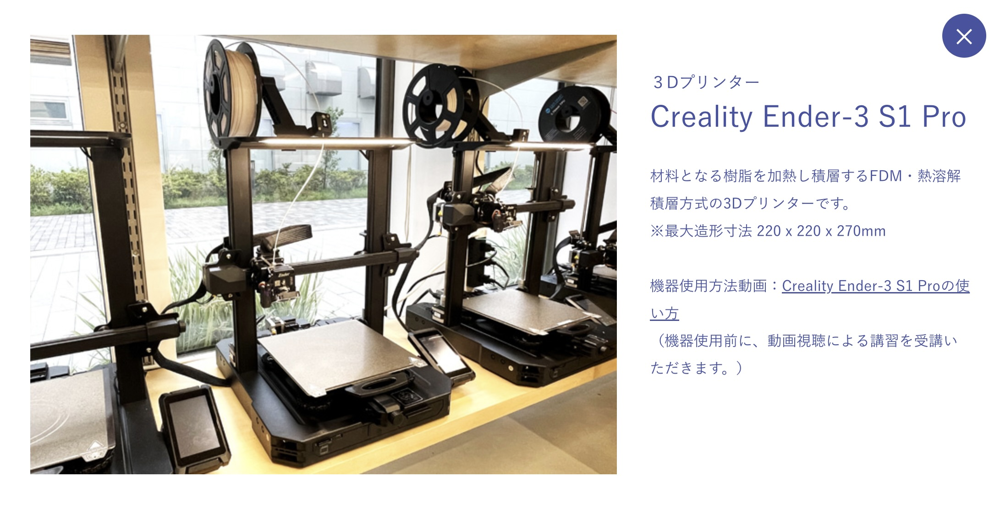
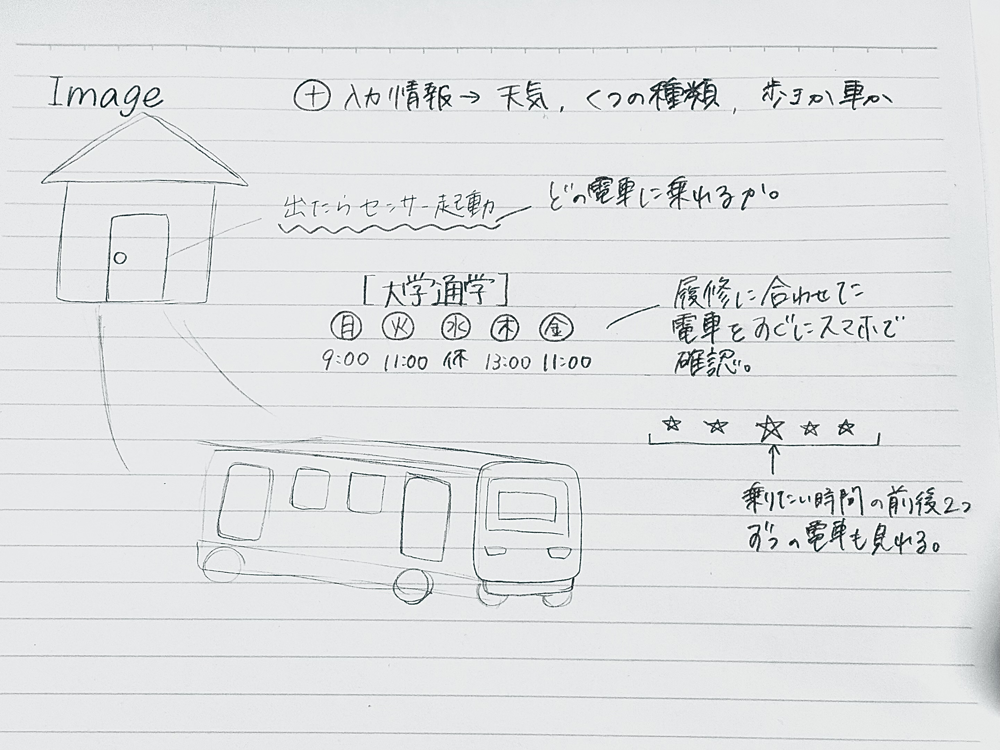
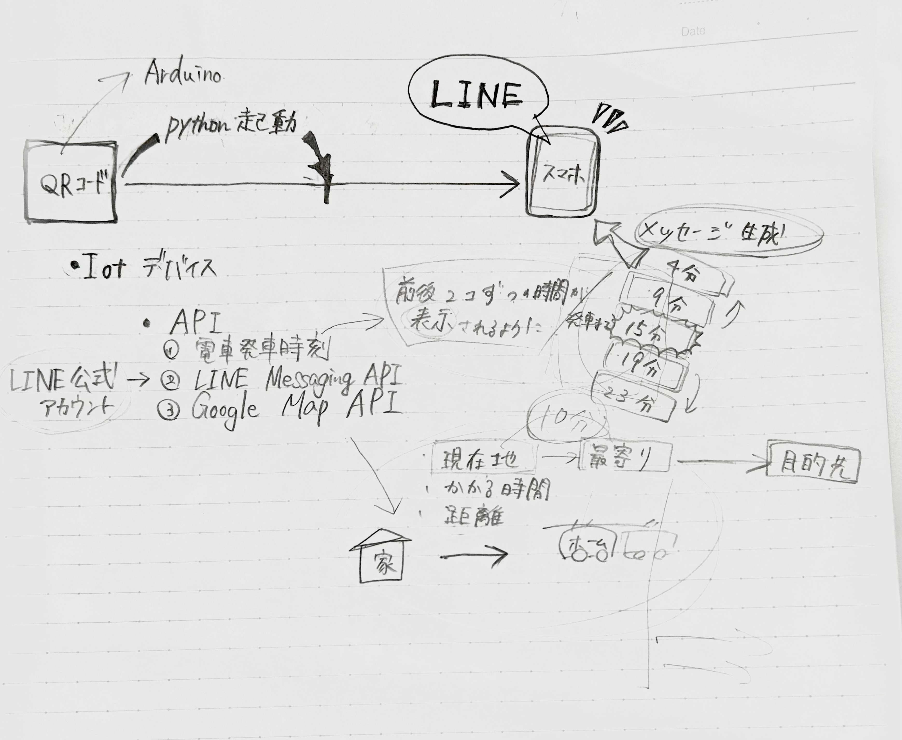
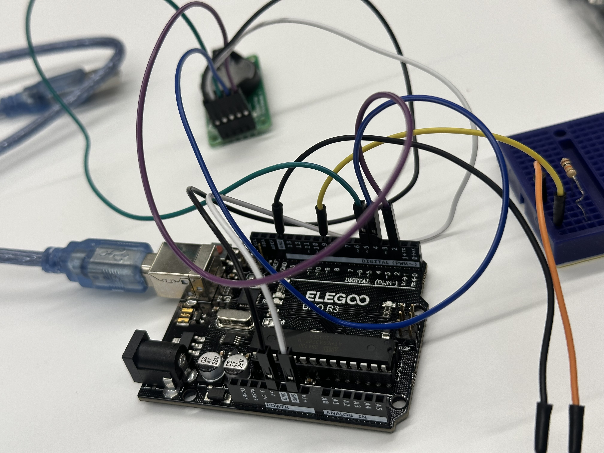
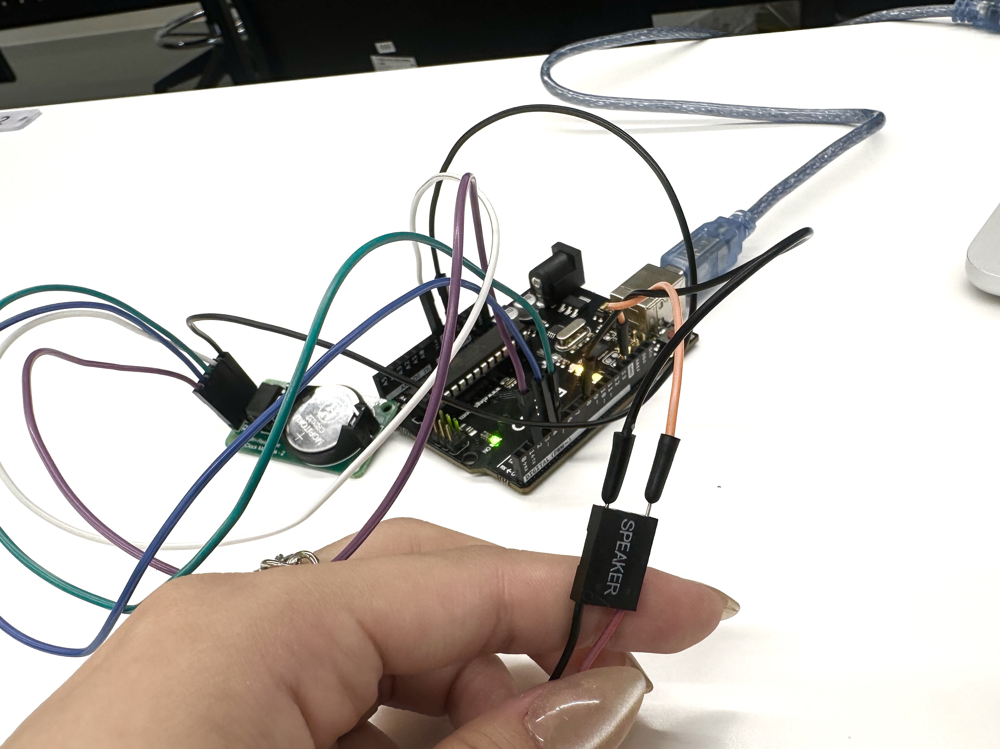

目覚まし時計⏰
共同制作者
タッカンマリ
muku
使用した "FabLab" の機械
・３Dプリンター

使用したモノ
・Arduino Uno
・USBケーブル
・ブレッドボード
・リアルタイムクロックモジュール （DS1302）
・マザーボード内部ミニスピーカー （DR-YM-038）
・ジャンパーワイヤー （Male-to-Female）
・ジャンパーワイヤー （Male-to-Male）
・パソコン （MacBook Air）
・リチウムコイン電池 （CR 2032）
・USBハブ-Type-C （U3HC-A430BXBK）
・目覚まし時計ケース （3Dプリンターで制作）
プロジェクトマネジメント
（プロセスメモープロセス・必要なモノやステップ・やるべきこと）
・・・・・・・・・・・・・・・・・・・・
■ は考えないといけないこと、疑問等
● は具体的にやること
→ はやったこと
・・・・・・・・・・・・・・・・・・・・
■ 現役大学生に寄り添ったものを作りたい！
■ 現役大学生は何が不便だろうか。（やはり朝、？）
● 現役の大学生にアンケートをとる。
● このサービスを作る上で必要なものを買う。


→ マザーボード内部ミニスピーカー （DR-YM-038）の購入
→ リアルタイムクロックモジュール （DS1302）の購入
→ ジャンプワイヤーの調達
→ 公式LINEアカウントを開設
● 電車の交通情報のAPIを取得するために、申請をする。
【6月25日】
→ 電車の運行時刻のAPIwo使用しようとして、コードまで取得しましたが、上手く情報を読み取ることができず、失敗。
■ APIが使えないため、最初に考えていたサービスは期限内での完成が難しい。
■ 他の案を考える。（目覚まし時計はどうだろうか。）

【7月1日】
→ 目覚まし時計のArduinoコード完成。
- #include <ThreeWire.h>
- #include <RtcDS1302.h>
- const int IO = 4; // DAT
- const int SCLK = 5; // CLK
- const int CE = 2; // RST
- const int buzzerPin = 8; // ピエゾブザーの接続ピン
- ThreeWire myWire(4, 5, 2); // IO, SCLK, CE
- RtcDS1302<ThreeWire> Rtc(myWire);
- void setup() {
- pinMode(buzzerPin, OUTPUT); // ピエゾブザーのピンを出力に設定
- Serial.begin(9600);
- Serial.print("compiled: ");
- Serial.print(__DATE__);
- Serial.println(__TIME__);
- Rtc.Begin();
- RtcDateTime compiled = RtcDateTime(__DATE__, __TIME__);
- printDateTime(compiled);
- Serial.println();
- if (!Rtc.IsDateTimeValid()) {
- Serial.println("RTC lost confidence in the DateTime!");
- Rtc.SetDateTime(compiled);
- }
- if (Rtc.GetIsWriteProtected()) {
- Serial.println("RTC was write protected, enabling writing now");
- Rtc.SetIsWriteProtected(false);
- }
- if (!Rtc.GetIsRunning()) {
- Serial.println("RTC was not actively running, starting now");
- Rtc.SetIsRunning(true);
- }
- RtcDateTime now = Rtc.GetDateTime();
- if (now < compiled) {
- Serial.println("RTC is older than compile time! (Updating DateTime)");
- Rtc.SetDateTime(compiled);
- } else if (now > compiled) {
- Serial.println("RTC is newer than compile time. (this is expected)");
- } else if (now == compiled) {
- Serial.println("RTC is the same as compile time! (not expected but all is fine)");
- }
- }
- void loop() {
- RtcDateTime now = Rtc.GetDateTime();
- printDateTime(now);
- Serial.println();
- if (!now.IsValid()) {
- Serial.println("RTC lost confidence in the DateTime!");
- }
- // 設定時刻 (例: 12:00:00)
- int alarmHour = 22;
- int alarmMinute = 13;
- int alarmSecond = 0;
- if (now.Hour() == alarmHour && now.Minute() == alarmMinute && now.Second() == alarmSecond) {
- // 5秒間音を鳴らす
- tone(buzzerPin, 2000, 5000); // 2kHzの音を5秒間鳴らす
- }
- delay(1000); // one second
- }
- #define countof(a) (sizeof(a) / sizeof(a[0]))
- void printDateTime(const RtcDateTime& dt) {
- char datestring[20];
- snprintf_P(datestring,
- countof(datestring),
- PSTR("%02u/%02u/%04u %02u:%02u:%02u"),
- dt.Month(),
- dt.Day(),
- dt.Year(),
- dt.Hour(),
- dt.Minute(),
- dt.Second());
- Serial.print(datestring);
- }
→ 3Dプリンターで外側の入れ物を作成。

紹介動画
発表資料